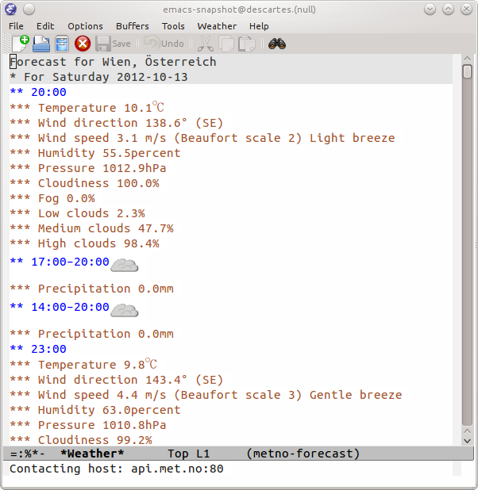
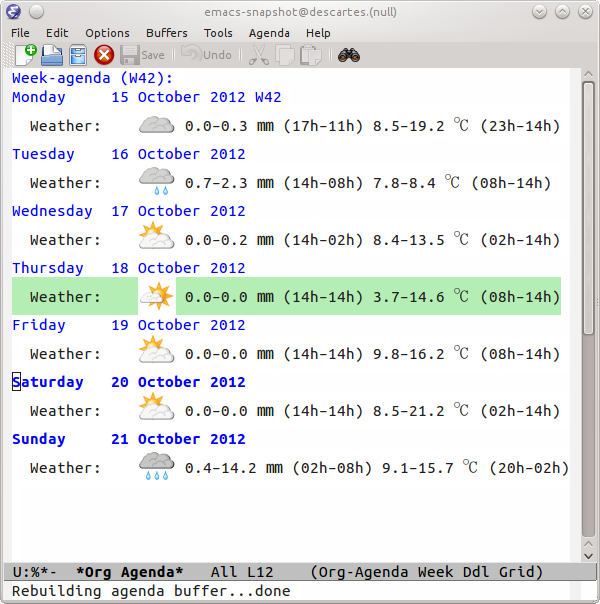
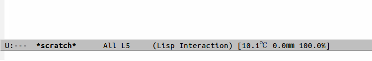

weather-metno-el: Weather data from met.no in Emacs
Table of Contents
Meteorologisk institutt (met.no) is the Norwegian national meterological institute. It offers free weather data under the CC BY 3.0 license. The forecast data is available for locations outside of Norway as well. Weather-metno-el uses the met.no webservice to provide the weather data in Emacs.
The project is currently work in progress and likely to change dramatically.
See todo.org for todos and longterm goals.
Please submit bug reports and feature requests to the Github issue tracker.
1 Installation
The easiest way to install weather-metno is by using el-get or marmalade-repo (package.el).
For manual installation simply call make to byte compile the code and add the
directory to your load-path.
2 Usage
Set the variables weather-metno-location-name, weather-metno-location-latitude,
weather-metno-location-longitude, and optionally
weather-metno-location-msl. Alternatively the calendar locations are used.
(setq weather-metno-location-name "Vienna, Austria"
weather-metno-location-latitude 48
weather-metno-location-longitude 16)
Now run M-x weather-metno-forecast and it will open a new buffer showing the
weather forecast for the given location.

Figure 1: Weather forecast buffer
You can use M-x weather-metno-forecast-location to get the weather forecast
for a different location.
If you want to force the icons to have a specific size then set
weather-metno-get-image-props to (:width 16 :height 16 :ascent center).
This only works when Emacs has ImageMagick support and
weather-metno-use-imagemagick is set (default is autodetect).
(setq weather-metno-get-image-props '(:width 16 :height 16 :ascent center))
2.1 Orgmode support
Weather-metno-el can display weather data in your agenda buffer. Simply add the
following line to an entry in an agenda file (see org-agenda-files):
%%(org-weather-metno)
You have to manually call M-x weather-metno-update to update the data.

Figure 2: Weather data in the Agenda
You can customize the way the information is displayed in the agenda buffer by
customizing the variables org-weather-metno-query and
org-weather-metno-format.
The variable org-weather-metno-query contains a query language script that is
executed on the weather data to extract and filter the information provided by
met.no. See the documentation of weather-metno-query for more information
about the query language. The query language is still under heavy development!
The variable org-weather-metno-format defines a format string to present the
information returned by the query to the user. Unlike format it uses a
different syntax based on curly brackets. The string {NAME} is replaced by
the matching entry in the result data. It is possible to add an action to the
data with {NAME|ACTION}. See weather-query-format for more information
about this. Currently the specifically defined actions are:
- :symbol
- Interpret the number value as a symbol index and retrieve it.
- :time
- Interpret the value as emacs' time and format it accordingly.
2.2 Mode-line support
Weather-metno-el comes with a feature to display the current weather in the
mode-line. Similar to the battery feature of Emacs.
Activate the feature with M-x weather-metno-mode-line. It should display the
current weather information and update itself every hour. However the weather
data is not updated automatically and you have to manually call M-x
weather-metno-update for now.
The mode-line support does not yet use the query language and therefore the displayed information can not be configured.

Figure 3: mode-line support